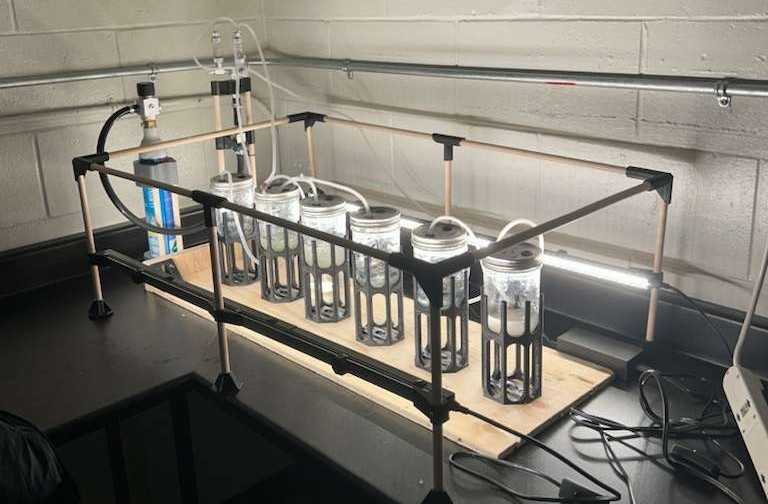

Award-Winning Capstone · BREE 490/495
Designed a zero-waste digestate management system for a Kentucky biogas facility processing whiskey distillery waste, developing a cost-effective process to recover nutrients and organic resources across four post-digestion stages. As part of the system, I designed, built, and experimentally validated a custom photobioreactor to optimize microalgae-based nutrient removal from liquid digestate.
BREE 490 · Fall 2024
The sustainable operation of anaerobic digestion systems hinges on effective digestate management — a challenge that, when solved, transforms a liability into an asset. This report presents a comprehensive process design for Biogas-ZE that valorizes whiskey distillery stillage through an integrated treatment train. We benchmarked separation technologies, selecting a decanter centrifuge for its superior solids capture efficiency and compatibility with downstream nutrient recovery. For the solid fraction, vacuum evaporation with heat integration was identified as the optimal stabilization pathway, producing a nutrient-rich soil amendment that meets regulatory standards for land application. The resulting system achieves near-complete resource recovery while aligning with Biogas-ZE's zero-waste and low-emission mandate.
Read Report 1 ↗BREE 495 · Winter 2025
Advancing anaerobic digestion adoption requires technologies that achieve genuine circularity in resource recovery. This report presents experimental validation of a photobioreactor system designed to integrate microalgae cultivation into Biogas-ZE's digestate management train. We constructed a custom benchtop photobioreactor to evaluate Chlorella vulgaris growth performance and nutrient removal efficiency across a gradient of synthetic digestate concentrations. Our experimental framework isolated key variables — light intensity, hydraulic retention time, and nutrient loading — to determine optimal conditions for maximum nutrient polishing while maintaining viable biomass productivity. Results confirm the feasibility of microalgae as a dual-function unit operation: polishing liquid digestate while producing biomass suitable for anaerobic co-digestion, thereby closing the nutrient loop and enhancing overall system economics.
Read Report 2 ↗STAGE 1
Decanter centrifuge for primary separation — high efficiency, compatible with downstream processes.
STAGE 2
Struvite precipitation recovering ammonium and phosphate as slow-release fertilizer.
STAGE 3
Custom-built reactor for microalgae-based nutrient removal from liquid digestate.
STAGE 4
Vacuum evaporation for solid fraction stabilization, nutrient-rich output for land application.

Growing algae in digestate analogue for nutrient removal studies